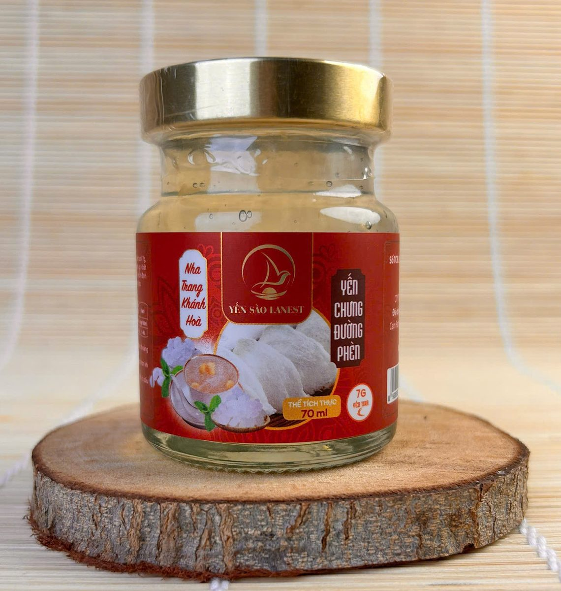

Bán yến lâu năm, ai cũng gặp những vị khách hỏi rất nhiều mà chưa mua. Họ so giá bên này bên kia, họ nghi chất lượng, có người từng mua phải yến kém nên giờ nhìn đâu cũng thấy ngờ. Trong một lần ghi âm kể chuyện nghề tháng 9/2026, người sáng lập Yến Sào Lanest nói khá kỹ về nhóm khách này. Bài này giữ nguyên lời chị kể, không sửa câu chữ, vì cách nói mộc ấy mới là thật.
Đội thợ riêng của Lanest làm sạch yến bằng tay: điều người sáng lập muốn khách thấy trước khi tin
1. Ca khó nhất không phải khách khó tính
Khi được hỏi về những ca khách hàng nhớ nhất, chị không kể chuyện khách nóng tính hay đổi trả. Chị kể về những người còn lưỡng lự:
"người ta vẫn hỏi nhiều nhưng mà người ta cũng chưa có chốt hay là người ta hỏi nhưng mà người ta so sánh giá bên này bên kia nè hoặc là người ta còn vẫn còn nghi ngờ về cái chất lượng của mình."
Ba lý do này rất quen với ai từng đi mua yến: hỏi kỹ vì yến không rẻ, so giá vì thị trường quá nhiều nơi bán, nghi ngờ vì đã nghe nhiều chuyện yến pha, yến độn. Lanest không coi đó là khách "khó". Người hỏi kỹ là người thật sự quan tâm mình ăn gì.
2. Người sáng lập cũng từng là người mua phải hàng kém
Chị hiểu cảm giác ngờ vực đó vì chính chị đã trải qua. Hồi còn lấy yến qua tay người khác, chị từng mua phải một lô yến tinh chế không đủ cân. Khi được hỏi lần thất bại nào khiến chị đổi cách làm tới giờ, chị ghi lại ngắn gọn:
"mua nhầm hang kém chat lượng, không bào giờ mua của bên cung cấp đó nữa"
Từ chuyện đó, Lanest chuyển sang có đội thợ riêng và kiểm tra hàng qua 4 chốt trước khi đóng hộp. Câu chuyện đầy đủ có trong bài câu chuyện thương hiệu Yến Sào Lanest. Ở đây chỉ nhắc lại một ý: người từng bị lừa thì không đi ép người khác tin mình.
3. Không ép, chỉ nói chuyện cho thật
Với khách còn phân vân, cách chị chọn rất đơn giản:
"Nhưng mà một số cái ca á là khi mà mình trao đổi, mình à tiếp cận mình nói chuyện với người ta một cách chân thành á thì người ta cũng mua những cái sản phẩm bên mình và thậm chí là có người đã quay lại được mua hàng bên mình rất là nhiều lần rồi."
Chị dùng chữ "một số ca", không nói "khách nào cũng mua". Có người nghe xong vẫn không mua, và điều đó cũng bình thường. Cái Lanest giữ là lời nói với khách phải đúng với hàng thật: hũ yến ghi bao nhiêu yến tươi thì nói bấy nhiêu, yến là thực phẩm thì không hứa như thuốc, chưa có số liệu thì nói là chưa có.
4. Tự nếm, tự xem rồi mới quyết
Cách nghĩ của chị với người đang phân vân rất gọn: đừng tin lời quảng cáo, kể cả lời của Lanest, hãy tự nếm, tự xem rồi mới quyết. Chưa quen thì mua ít trước, dùng thử vài hũ, thấy hợp rồi hãy mua nhiều. Người lần đầu dùng yến hũ thường được gợi ý bắt đầu từ vị đường phèn, vị bán chạy nhất của Lanest, vì vị nguyên bản, dễ uống. Xem thêm bài yến chưng đường phèn.

Hũ yến chưng đường phèn: vị bán chạy nhất của Lanest, dễ bắt đầu cho người lần đầu thử
5. Vì sao vẫn làm nghề, kể cả ngày mệt nhất
Nói chuyện chân thành với khách chỉ giữ được lâu khi người nói tin vào thứ mình bán. Hỏi chị vì sao vẫn theo nghề yến kể cả những ngày mệt nhất, chị trả lời hai lần, hai cách nói, cùng một ý:
"Chị muốn mang đến cho khách hang sản phẩm sự tốt cho sức khỏe"
"chị muốn mang đến khách hàng một cái sản phẩm thật sự là chất lượng."
Chị bước vào nghề vì gia đình mình dùng yến trước. Với chị, bán cho khách cũng là bán thứ mình cho người nhà dùng, nên không có lý do gì để nói quá.
6. Mỗi buổi họp bắt đầu bằng "Có gì vui không?"
Cách người sáng lập nói chuyện với khách cũng là cách chị nói chuyện với đội. Trong buổi họp đầu tuần giữa tháng 9/2026, chị mở đầu bằng hai câu, hỏi lần lượt từng người cho tới khi ai cũng trả lời được:
"Có gì vui không?"
"Mình có làm được cái gì mà mình cảm thấy tự hào không?"
Hỏi chuyện vui trước, hỏi việc sau. Một đội quen được lắng nghe thì khi nghe khách hỏi đi hỏi lại cũng kiên nhẫn hơn. Phần còn lại về cách Lanest làm việc nội bộ có trong bài văn hóa làm việc Yến Sào Lanest.
Câu hỏi thường gặp
Tôi còn nghi ngờ chất lượng yến, nên kiểm tra Lanest thế nào?
Anh chị có thể xem giấy tờ, chứng nhận và cách Lanest làm hàng trong bài Yến Sào Lanest có uy tín không, rồi gọi hotline hỏi thêm điều còn thắc mắc.
Lần đầu mua yến hũ nên chọn vị nào?
Nhiều người bắt đầu với vị đường phèn vì vị nguyên bản, dễ uống. Người cần hạn chế đường thì hỏi nhân viên về hai vị dùng đường isomalt.